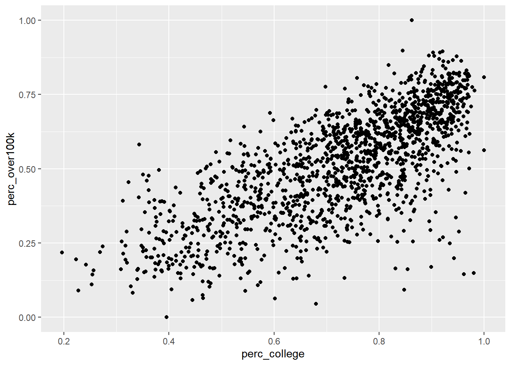
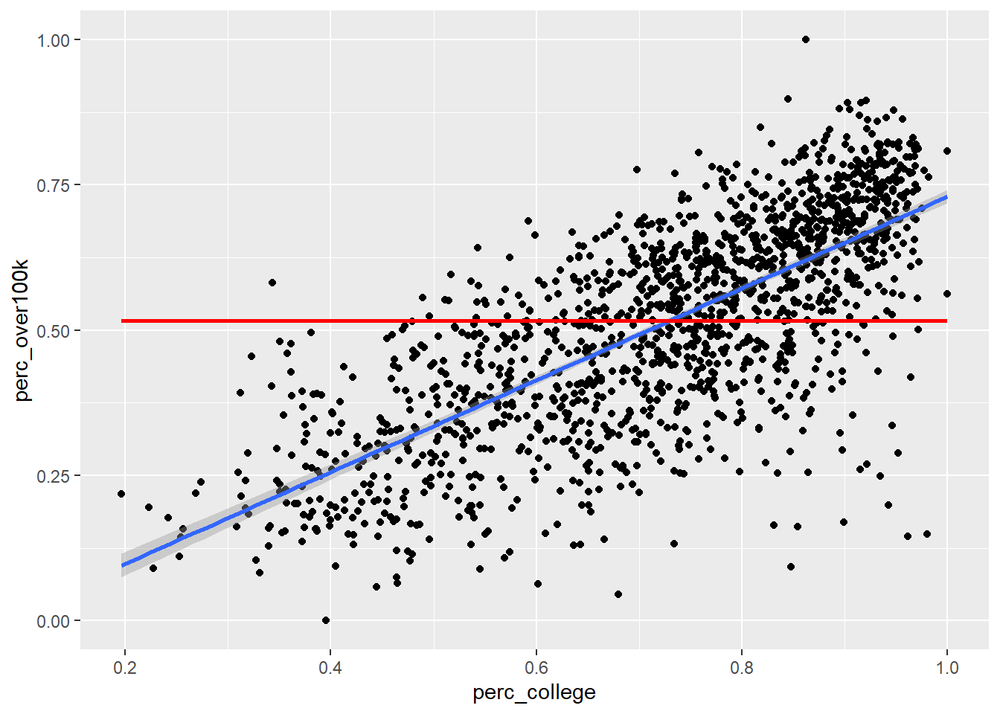
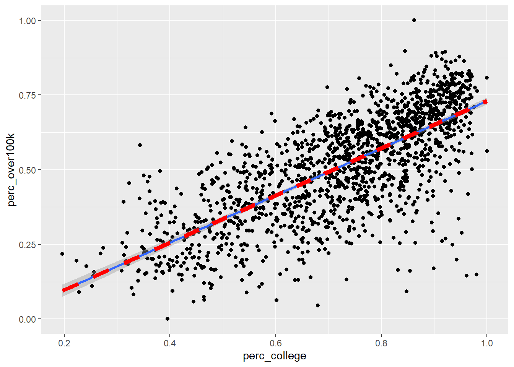
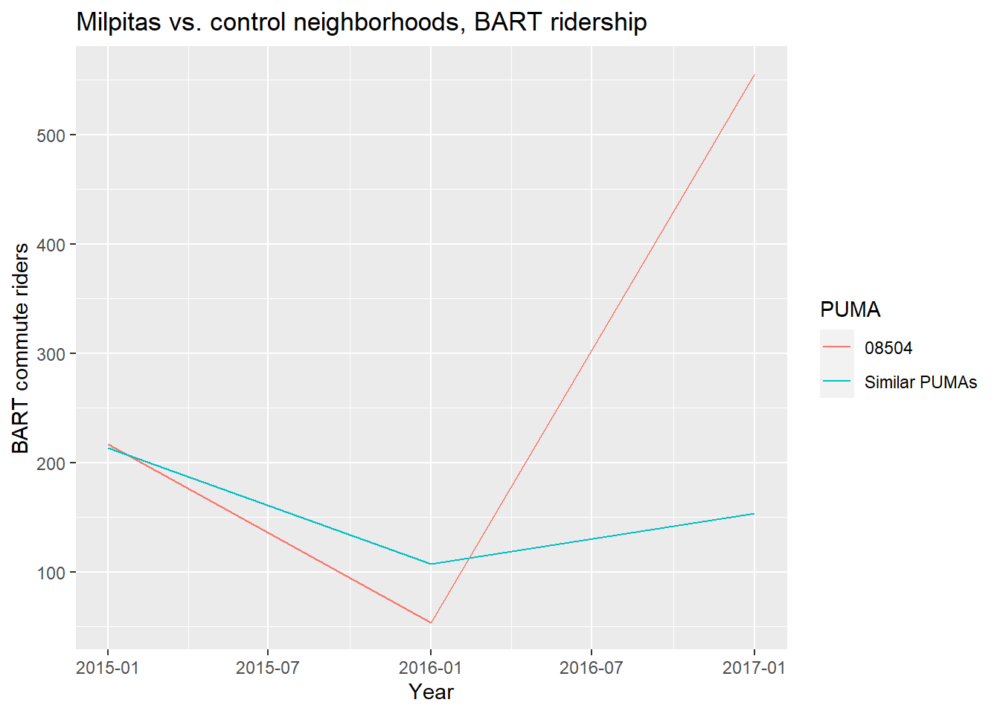
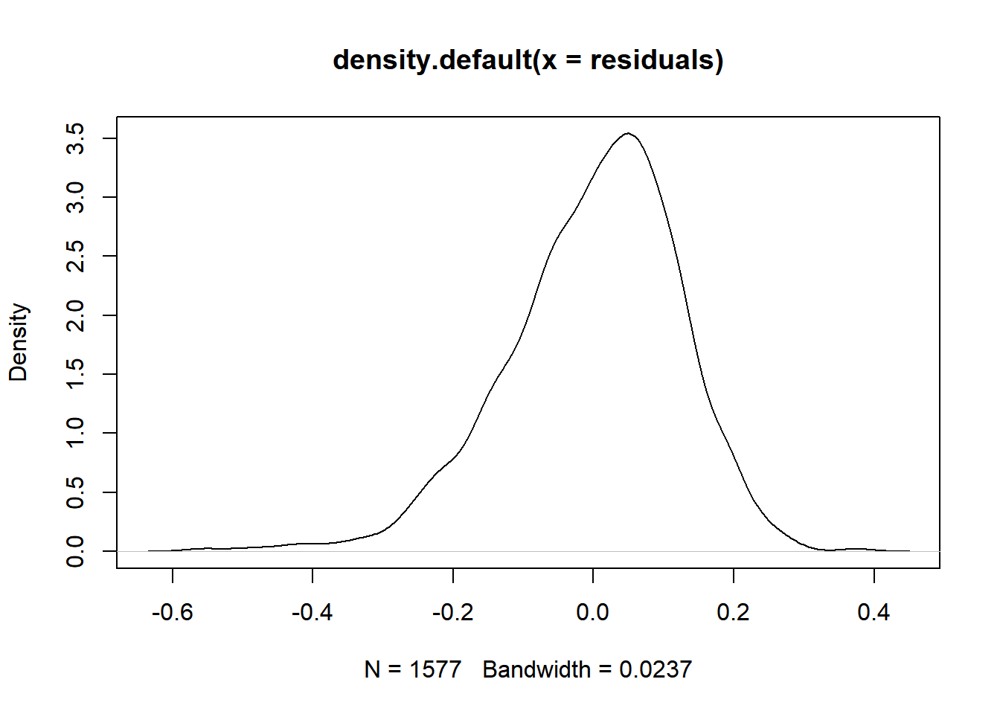
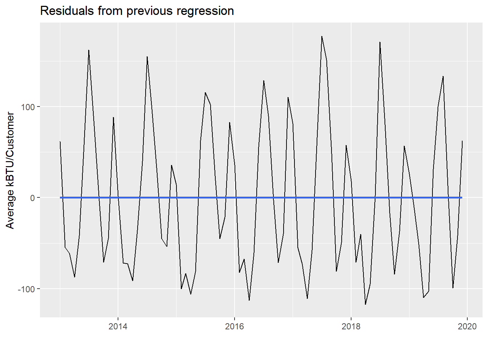

5.1 Simple linear regression
This section will not serve as a replacement for a more formal mathematical introduction to regression, but may be a good complement that lets us “peek under the hood” with some real data. You should be familiar with the idea that regression is associated with the trendline that Excel allows one to add to a scatter plot. Let’s go ahead and see how to set that up in R, and then inspect the result more closely. For our demonstration, let’s return to ACS data and compare two different variables in the Bay Area at the tract level: educational attainment and income. Common sense tells us that these outcomes are likely to be related: if one is high for a random census tract, we would bet that the other is also high. For the simple linear regression version, we need to distill both education and income into one-dimensional measures, like “% of population 25 years and older with college or higher” and “% of households making $100,000 or more”, and collect these values at a granular level, in this case census tracts in the Bay Area.
To construct the education variable for each tract, we’ll use table B06009: PLACE OF BIRTH BY EDUCATIONAL ATTAINMENT IN THE UNITED STATES. It has breakdowns by place of birth that aren’t relevant to our current analysis, but conveniently it starts with giving educational attainment breakdowns overall, and we only need B06009_001E: “Total”; B06009_002E: “Less than high school graduate”, and B06009_003E: “High school graduate (includes equivalency)” to be able to construct “% College or higher”. Similarly, for income, we’ll make use of some specific variables in B19001 to construct “% $100K+”. If you have a pretty specific measure to create, you can usually grab specific variables in this way and avoid using the “group()” technique; but as you can see below, there is still a lot of typing involved, and you’ll want to make sure you got all your math right.
library(tidyverse)
library(censusapi)
library(sf)
library(mapview)
library(tigris)
Sys.setenv(CENSUS_KEY="c8aa67e4086b4b5ce3a8717f59faa9a28f611dab")
acs_vars_2019_5yr <-
listCensusMetadata(
name = "2019/acs/acs5",
type = "variables"
)bay_education_income_tract <-
getCensus(
name = "acs/acs5",
vintage = 2019,
region = "tract:*",
regionin = "state:06+county:001,013,041,055,075,081,085,095,097",
vars = c(
"B06009_001E",
"B06009_002E",
"B06009_003E",
"B19001_001E",
"B19001_014E",
"B19001_015E",
"B19001_016E",
"B19001_017E"
)
) %>%
transmute(
tract = paste0(state, county, tract),
perc_college = 1 - (B06009_002E + B06009_003E) / B06009_001E,
perc_over100k = (B19001_014E + B19001_015E + B19001_016E + B19001_017E) / B19001_001E
) %>%
filter(
!is.na(perc_college),
!is.na(perc_over100k)
)It’s useful to filter out NA values for all records you may analyze in regression, since they will not be usable at some point (i.e., missing information will not allow you to compare across variables).
Note that because we are working with average values from the ACS for a certain geography, in this case census tracts, we should consider an ecological inference problem when interpreting our results. It’s possible that just looking at average statistics for a census tract is masking an underlying relationship between income and race at the individual household level. We’ll try to account for this later when we switch to household-level PUMS data (which bring other important nuances as well).
Also, regression across units (in this case census tracts) that have geographic relationships with each other can be subject to spatial autocorrelation, in which neighboring units can have an effect on your measures. We’ll cover this issue specifically in a coming chapter; for now, we will assume such issues have negligible effects in order to focus on learning the principles of simple linear regression.
Let’s first plot this data as a scatter plot using geom_point() in ggplot:
ggplot() +
geom_point(
data = bay_education_income_tract,
aes(
x = perc_college,
y = perc_over100k
)
)
Now let’s add a regression line using the built-in capabilities of ggplot, specifically geom_smooth() with the argument method = “lm” which stands for “linear model”. Note that in this case, since we want both geom_point() and geom_smooth() to refer to the same data, we move the data = and aes() arguments within ggplot() itself, which is like turning this specific frame of the data into the object in the pipeline.
ggplot(
data = bay_education_income_tract,
aes(
x = perc_college,
y = perc_over100k
)
) +
geom_point() +
geom_smooth(method = "lm")
The default method for geom_smooth() happens to be a more complicated technique called LOESS (locally estimated scatterplot smoothing), but we’ll focus for now on the simple linear version. So how exactly is the “regression line” determined? By definition, the regression line is positioned such that it minimizes the “sum of squares of residuals” (SSR), where residuals are the vertical distances between each scatter plot point and the regression line itself. Let’s try directly calculating this SSR value with a different potential “best fit line” which has a slope 0 and a y-intercept at the mean of the y-axis values: in other words, just a flat horizontal line across the middle of this data. From there, we’ll populate best_fit_candidate with paired values for every actual y-value in the real data, but because this candidate line is a straight horizontal line, every paired value will just be the same as the y-intercept. Then, we’ll calculate the residuals as the difference between each pair of y-values, and take the sum of squares of all residuals.
slope <- 0
yintercept <- mean(bay_education_income_tract$perc_over100k)
best_fit_candidate <- slope * bay_education_income_tract$perc_college + yintercept
residuals <- bay_education_income_tract$perc_over100k - best_fit_candidate
sumsq_residuals <- sum(residuals^2)
sumsq_residuals## [1] 50.81099And here’s a plot showing this poor “best fit candidate” in comparison to the actual best fit line according to geom_smooth():
ggplot(
data = bay_education_income_tract,
aes(
x = perc_college,
y = perc_over100k
)
) +
geom_point() +
geom_smooth(method = "lm") +
geom_line(
aes(
x = bay_education_income_tract$perc_college,
y = best_fit_candidate
),
color = "red",
size = 1
)
If this straight horizontal line yields a SSR of 51, then the actual best fit line must be able to produce a lower SSR. If we didn’t have geom_smooth() to give us the best fit line directly, we could try to use optimization techniques in R to discover the slope and y-intercept of the best fit line. To do this, let’s first turn the code we previously used into a function. We haven’t explicitly done this yet in the curriculum, but this technique is generally available wherever you think it increases clarity of the code or reduces the amount of repetitive writing you have to do. For example, anywhere we’ve used a map() function from purrr in tidyverse, we could have pre-created a function that does the steps within map(). Anyway, here’s the functionalized version of the math we did previously:
get_sumsq_residuals <- function(x){
slope <- x[1]
yintercept <- x[2]
best_fit_candidate <- slope * bay_education_income_tract$perc_college + yintercept
residuals <- bay_education_income_tract$perc_over100k - best_fit_candidate
sumsq_residuals <- sum(residuals^2)
}The name get_sumsq_residuals is up to you, just like naming a data object. After running the chunk above, get_sumsq_residuals() wasn’t actually applied to anything, but it is now available to you to use, just like any function we’ve used so far. Whatever argument you provide to get_sumsq_residuals() inside the parentheses is then used in the way x is used in the function definition. Note that in our case, the function input x actually needs to be a vector with two values within it, which represent the slope and yintercept. If you supply a different data structure for x when running get_sumsq_residuals(), an error will be triggered. You will get back the value of sumsq_residuals if everything runs correctly; this is because it’s the last line in the function, though you can always clarify what you want returned using return().
Now let’s use optim() to let R search for the best two values, x[1] and x[2], given the goal of minimizing the result of get_sumsq_residuals(). Similar to “Goal Seek” in Excel, the function will search through a range of numerical options for x[1] and x[2]. optimize() is the simpler version that optimizes based on a single variable, but here we use optim() to deal with two changing variables, and optim() requires the input to be written as a c() vector, hence the specific structure of the input for the get_sumsq_residuals() function.
optimization <- optim(c(0,0), get_sumsq_residuals)
optimization## $par
## [1] 0.78995722 -0.05999454
##
## $value
## [1] 23.70676
##
## $counts
## function gradient
## 65 NA
##
## $convergence
## [1] 0
##
## $message
## NULLThe output optimization is a list of various potentially useful metrics. optimization$par is the specific pair of results for slope and y-intercept, and optimization$value is the minimized SSR, which we can see is less than our previous attempt. Let’s now directly plot the “best fit line” based on this optimization result and see if it matches the automatic result from geom_smooth():
ggplot(
data = bay_education_income_tract,
aes(
x = perc_college,
y = perc_over100k
)
) +
geom_point() +
geom_smooth(method = "lm") +
geom_line(
aes(
x = perc_college,
y = perc_college * optimization$par[1] + optimization$par[2]
),
color = "red",
linetype = 2,
size = 2
)
Now that you’ve produced the regression line from scratch, you should feel comfortable trusting R’s regression lines. However, keep in mind from your general understanding of regression models that they are only valid if a set of conditions are true about the data, including that the mean of the residuals is ~ 0, and that the residuals are normally distributed.
slope <- optimization$par[1]
yintercept <- optimization$par[2]
best_fit_candidate <- slope * bay_education_income_tract$perc_college + yintercept
residuals <- bay_education_income_tract$perc_over100k - best_fit_candidate
mean(residuals)## [1] 3.658757e-05plot(density(residuals))
The mean of the residual is close to zero, but there appears to be a slight skew to the density curve for the residuals, which might mean that we don’t have the conditions necessary to meaningfully interpret regression results on the data (we will specifically explore problems with spatial autocorrelation later). This particular distribution does not look significantly skewed, but visual inspection of the original scatterplot suggests that a straight best-fit line is mostly appropriate for the underlying data. Many other robust tests for normality are available should your work entail them.
Besides plotting with ggplot, which is always recommended if you’re working with two continuous variables so you can visually inspect the distribution of data, the formal function for regression analysis is lm(), which is used as follows. If you are familiar with the y = mx + b framing of the regression line, then think of y as the variable you are trying to predict using the x information. Another common way of describing this is that y is the dependent variable, and x is the independent variable. In lm(), the first argument is a specific arrangement where the y variable field name is provided before the ~, and the x variable field name is provided after the ~ (when we move on to multiple regression, you’ll add additional x variables after the ~). The second necessary argument to lm() is the overall dataframe.
model <- lm(perc_over100k ~ perc_college, bay_education_income_tract)
summary(model)##
## Call:
## lm(formula = perc_over100k ~ perc_college, data = bay_education_income_tract)
##
## Residuals:
## Min 1Q Median 3Q Max
## -0.56483 -0.07131 0.01394 0.08257 0.37896
##
## Coefficients:
## Estimate Std. Error t value Pr(>|t|)
## (Intercept) -0.05996 0.01393 -4.305 1.77e-05 ***
## perc_college 0.78996 0.01862 42.435 < 2e-16 ***
## ---
## Signif. codes: 0 '***' 0.001 '**' 0.01 '*' 0.05 '.' 0.1 ' ' 1
##
## Residual standard error: 0.1227 on 1575 degrees of freedom
## Multiple R-squared: 0.5334, Adjusted R-squared: 0.5331
## F-statistic: 1801 on 1 and 1575 DF, p-value: < 2.2e-16model holds a lot of information about the regression analysis, and summary(model) is a common way to output results, though you may not necessarily need every single metric provided (depending on how technical your statistical experience is). I’ll describe what I tend to focus on when I view this kind of summary output:
- It’s generally good to see that the Residuals (also accessible in full through
model$residuals) are roughly centered on 0 and have roughly symmetrical distribution, which are just other signals of the same findings from our previous chunk’s approach. model$coefficientsgets you the same information as we got from our manual optimization function.- The standard error for the slope coefficient, in this case a standard error of 0.0186158 on the slope of 0.7899599, is important. Think of it as a measure of uncertainty about the slope of the line. Usually the fundamental question we’re asking when doing a simple linear regression is: Does the specific best fit line through our sample data seem to suggest that the “true best fit line” for the whole population is something other than a flat line (similar to our previous example)? The “0” assumption is called the “null hypothesis”, which is basically the starting assumption that there is no relationship between the
xandyvalues (i.e. knowing information aboutxdoes not give us any predictive power ony). But if our particular scatter plot seems to show a non-zero relationship, and the likelihood of an “off-chance sampling” from a full population that conforms with the null hypothesis can be measured using standard error and shown to be exceedingly unlikely, then we formally “reject the null hypothesis” and accept this sample-based regression line as reflective of “reality”. That threshold for deciding to reject the null hypothesis is based on the standard error placing the “off-chance sampling” in the tail ends of a normal distribution and is usually an arbitrary low probability like 0.05, which the asterisks in the output refer to, and which the “p-value” (shown here under the headingPr(>|t|)) is formally being compared against (i.e. if the p-value is less than 0.05, usually that’s sufficient for a scientific experiment’s results to be considered “statistically significant”). If you haven’t encountered this material through a more formal statistics reading, this brief description certainly doesn’t do the topic justice; I am merely doing a cursory review and pointing out where to find common statistical measures that you should build a fuller understanding of through other sources. - “R-squared” is a measure of the shared variance between the
xandyvalues. You could say that “variation in x explains 53.3% of the variation in y”. Sharing 100% of variance would be a perfect prediction. The gap is essentially the “residuals”, and you should always expect a gap when dealing with social data because, as we’d expect, everything can have myriad influences in all kinds of directions, and everything also has some amount of natural variation.
Keep in mind that none of these results should be interpreted as having anything to do with causation; regression analyses should be put squarely in the “correlation” category of analysis (we’ll consider causal inference later). All we’re looking at are relationships between observed values. A classic error is to assume that the regression line shows you how much “directly changing x” affects y, but keep in mind that it was entirely up to us which variables we happened to consider for x vs. y! Perhaps your intuition is that education must certainly be the “lever” which is causing people’s income to also be higher, through better jobs. But consider that high income may also be the means by which parents can pay for better educational opportunities for their children, thereby also increasing the educational attainment of the census tract!
By the way, if you want to make a “prediction” using this regression model, given a new x value, you can do it as follows:
predict(model, data.frame(perc_college = 0.5))## 1
## 0.33502predict() receives the model as its first argument, and then can receive a dataframe with a field of x values with the same field name as was used in model. So even though we just want to make one prediction here, given a new Census tract with perc_college = 0.5, we need to feed that in as a dataframe using data.frame(). Also note that if you give no second argument to predict(), it will by default use the original data itself, meaning it will essentially create the same thing as best_fit_candidate from before, with y values for every original x that line up exactly on the regression line.
If the residuals from your linear model appear significantly skewed, and the original data appears to be better fit by a curve than by a straight line, you could consider applying a log transformation to your model. A common way to do that is to replace y ~ x in your lm() argument with log(y) ~ x. The effect of changing the y-axis to a log scale is to turn every “increment” into exponential growth. That also means that “for every 1 increase in x”, you would now be predicting “some % increase in y”, in a multiplicative sense. For example, if your lm() output shows a regression coefficient of 0.693, you would interpret that as exp(0.693) or 2, which is the multiplier on y: “for every 1 increase in x, I predict a doubling of y”. Checking the residuals of the model after this step should yield a more normal distribution.
As a last demonstration for this section, let’s see what simple linear regression may tell us if we apply it to time series data, like the PG&E data we’ve used in Chapter 1. The major problem is seasonality, which a linear regression is not inherently designed to deal with. However, it would be possible to investigate a particular slice of data, like comparing only Septembers with each other across the years, and if there really is a general trend up or down through the years, we’d be able to describe that trend with a regression line and potentially use it to predict future Septembers.
In the demonstration below, I’ll set up data for all months from 2013 to 2019 (you can replicate this if you download all the data from the PG&E site, but beware of a few manual corrections you need to make where PG&E simply has poor quality control on its own field names). Then I’ll compute a total AVERAGEKWH for customers in the PG&E territory each month and plot the results. We’ll see what the regression analysis gives us if we apply it directly to the entire dataset.
years <- 2013:2019
quarters <- 1:4
pge_data <- NULL
for(year in years) {
for(quarter in quarters) {
filename <-
paste0(
"pge/PGE_",
year,
"_Q",
quarter,
"_ElectricUsageByZip.csv"
)
temp <- read_csv(filename)
pge_data <-
rbind(pge_data,temp)
}
}
pge_avg_kwh <-
pge_data %>%
filter(CUSTOMERCLASS == "Elec- Residential") %>%
group_by(YEAR, MONTH) %>%
summarize(
TOTALCUSTOMERS = sum(TOTALCUSTOMERS, na.rm = T),
TOTALMONTHLYKWH = sum(TOTALKWH, na.rm = T)
) %>%
mutate(
AVGMONTHLYKWH = TOTALMONTHLYKWH/TOTALCUSTOMERS,
DATE =
paste(
YEAR,
MONTH,
"01",
sep="-"
) %>% as.Date()
)pge_avg_kwh %>%
ggplot(
aes(
x = DATE,
y = AVGMONTHLYKWH
)
) +
geom_line() +
geom_smooth(method = "lm") +
labs(
x = "",
y = "Average kBTU/Customer",
title = "Residential Electricity Consumption in PG&E Territories"
)Notice that there is a slight downward trend through the seasonality of the monthly data. Let’s see what lm() reports out:
model_pge <- lm(AVGMONTHLYKWH ~ DATE, pge_avg_kwh)
summary(model_pge)##
## Call:
## lm(formula = AVGMONTHLYKWH ~ DATE, data = pge_avg_kwh)
##
## Residuals:
## Min 1Q Median 3Q Max
## -117.17 -70.87 -13.91 62.00 177.81
##
## Coefficients:
## Estimate Std. Error t value Pr(>|t|)
## (Intercept) 973.44834 202.82178 4.800 7.05e-06 ***
## DATE -0.02599 0.01194 -2.176 0.0324 *
## ---
## Signif. codes: 0 '***' 0.001 '**' 0.01 '*' 0.05 '.' 0.1 ' ' 1
##
## Residual standard error: 80.77 on 82 degrees of freedom
## Multiple R-squared: 0.05459, Adjusted R-squared: 0.04306
## F-statistic: 4.735 on 1 and 82 DF, p-value: 0.03244Notice that an increase of DATE by one unit appears to be associated with a reduction of AVGMONTHLYKWH by -0.0259851 (with a p-value in the 0.01-0.05 range). The DATE field, as a Date-type object, can be automatically converted to numeric values, which is reported out as days since January 1, 1970 (try this out in the Console: Sys.Date() %>% as.numeric()). So, that’s how we know to interpret the regression coefficient as incrementing by days in the x-axis. If we wanted to report this out with more interpretable numbers, we could multiply both sides by 365 and say that every additional year seems to be associated with a reduction in average monthly customer electricity usage of about -9.5 kWh.
We can actually plot model_pge$residuals as well:
pge_avg_kwh %>%
ggplot(
aes(
x = DATE,
y = model_pge$residuals
)
) +
geom_line() +
geom_smooth(method = "lm", se = F) +
labs(
x = "",
y = "Average kBTU/Customer",
title = "Residuals from previous regression"
)
Notice the residuals themselves have a flat horizontal line through them, since the original downward “trend” has been “accounted for”, and the residuals are all the non-trending variation that remains in the data. In a way, we’ve essentially separated out two trends in the PG&E data using this side-effect of regression on seasonal data. The residuals still show seasonality based on different energy usage throughout the months. But the original regression line is the undercurrent of slow, gradual reduction in average energy usage, which could be reduced consumption behavior, or energy efficiency improvements, or both.